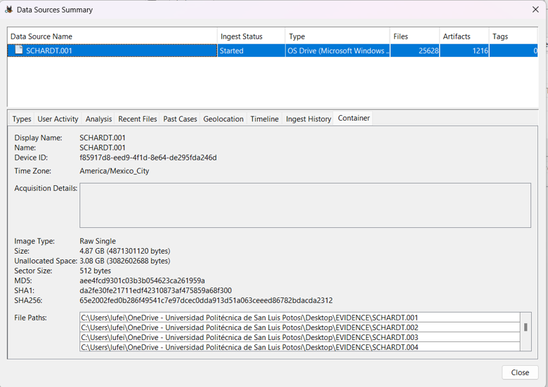
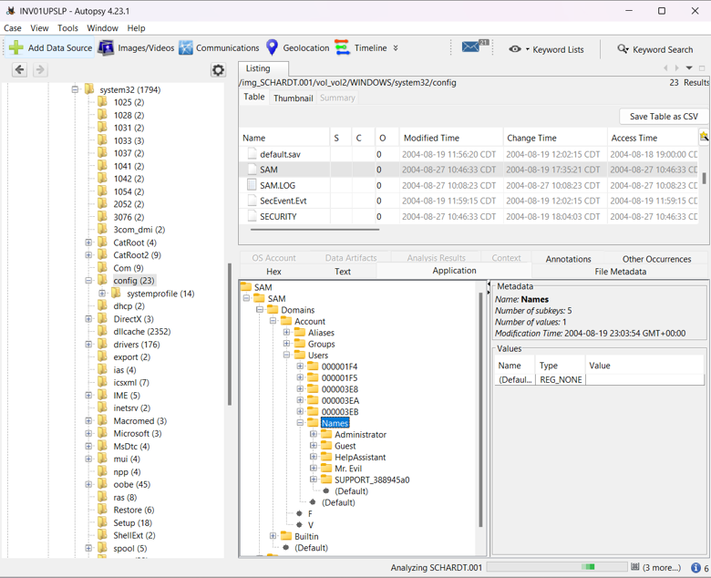
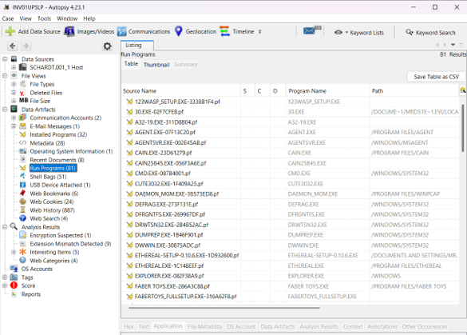

Parte I: Configuración del Caso y Origen de Datos
La evidencia segmentada en 8 bloques (SCHARDT.001 a SCHARDT.008) se procesó bajo el caso INV01UPSLP. Para comprender la metodología de ingestión, se analizaron los distintos tipos de orígenes soportados en Autopsy:
- Logical Files: Importación de archivos o directorios individuales (ficheros lógicos sueltos) sin procesar una imagen bit a bit. No examina tablas de particiones ni espacio no asignado.
- Local Disk: Análisis directo en vivo de una unidad física o volumen conectado localmente (ej. USB con bloqueador de escritura), leyendo la tabla de particiones directamente del dispositivo.
- Disk Image or VM File: Método seleccionado para la práctica; procesa contenedores de imágenes forenses crudas (
.dd/.001) o virtuales manteniendo la estructura completa del medio.
Parte II: Verificación de Integridad y Cuestionario Forense
Mediante el módulo Data Source Integrity y la inspección del registro de Windows XP, se obtuvieron las respuestas oficiales del caso:
# Hashes criptográficos de verificación (SCHARDT.001)
MD5: aee4fcd9301c03b3b054623ca261959a
SHA-1: da2fe30fe21711edf42310873af475859a68f300
SHA-256: 65e2002fed0b286f49541c7e97dcec0dda913d51a063ceeed86782bdacda2312- ¿Coinciden los hashes? Sí. Al contrastar el hash de adquisición oficial del NIST (CFReDS) contra el calculado por Autopsy, se confirma la inalterabilidad de la evidencia.
- Sistema Operativo: Microsoft Windows XP Professional (32-bit x86, Build 2600, Product ID:
55274-640-0147306-23684). - Fecha de instalación: 19 de agosto de 2004 a las 17:48:27 CDT (Epoch:
1092955707enInstallDate). - Zona horaria: Central Standard Time (CST, UTC-6) con cambio automático a CDT (UTC-5).
- Propietario registrado: Greg Schardt (
RegisteredOwner). - Nombre de la computadora:
N-1A9ODN6ZXK4LQ(Usuario interactivo principal:Mr. Evil). - Dominio principal:
EVIL(Obtenido deSECURITY\Policy\PolPrDmNdecodificado en UTF-16LE). - Último apagado: 27 de agosto de 2004 a las 10:46:33 CDT (FILETIME:
0x01C48C4D0700FCC4). - Cuentas registradas (Total: 5):
Administrator(500),Guest(501),HelpAssistant(1000),SUPPORT_388945a0(1002) yMr. Evil(1003).

Fig 1: Validación criptográfica MD5/SHA de la evidencia

Fig 2: Enumeración de las 5 cuentas locales en el registro
Parte III: Correlación de Actividad Maliciosa
A través de los artefactos Installed Programs (32) y Run Programs (81 - Prefetch), se identificó la instalación y ejecución de software ofensivo entre el 19 y el 27 de agosto de 2004:
- Ethereal v0.10.6 & WinPcap 3.01: Analizador de protocolos para intercepción de tráfico en texto plano.
- Network Stumbler v0.4.0: Escáner de redes inalámbricas 802.11b para wardriving.
- Cain & Abel v2.5 & 123WASP: Herramientas de recuperación y volcado de contraseñas.
- Look@LAN v2.50 (
irunin.ini): Prueba de atribución técnica directa que vincula a%REGOWNER%=Greg Schardtcon la sesión%LANUSER%=Mr. Evily la IP192.168.1.111.

Fig 3: Evidencia de herramientas de hacking y sniffing instaladas
Conclusiones y Líneas de Investigación
Cadena de Custodia y Atribución: La coincidencia del hash MD5 (aee4fcd9301c03b3b054623ca261959a) garantizó la inalterabilidad de la evidencia. La correlación cruzada entre registros, artefactos Prefetch e irunin.ini sustenta técnica y jurídicamente la atribución del equipo al sospechoso Greg Schardt.
Líneas de Investigación Futuras: Inspección profunda de capturas de tráfico (pcap) en los documentos de usuario, revisión de comunicaciones en mIRC / correo, y contraste de la dirección MAC física (00:10:A4:93:3E:09) con registros de hotspots públicos.